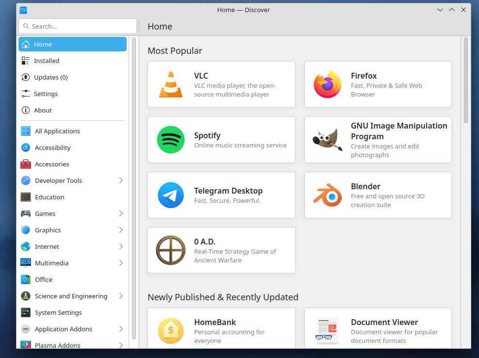
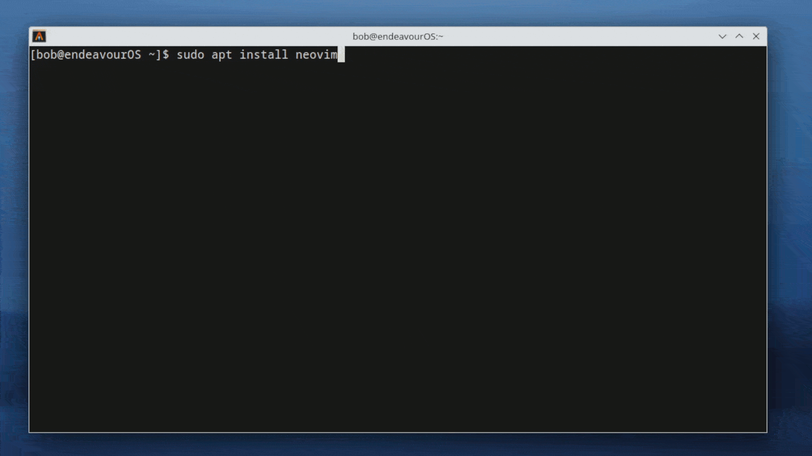

Here are a few things that this page will assume:
- You are a Microsoft Windows user.
- You use very little to no free software or don't know.
- You have little to no experience with a command line interface (like Windows Powershell or CMD)
- You have no experience with GNU/Linux (or erroneously referred to as just Linux)
Before we continue to the main part of this ramble, let's answer some common questions about GNU/Linux:
GNU/Linux?
When just saying "linux", it is technically correct. But that's like calling a computer copper because it has copper in it. The GNU comes from the GNU operating system. Parts of GNU have been integrated into Linux, so it is more correct to say GNU/Linux. You can read more about GNU here.Who is GNU/Linux for?
Everyone! The beauty of free software is that there isn't a "one for gamers" and "one for office workers". You could take Red Star OS and turn it into a gaming machine if you reaaally wanted to.Why should I care?
If you care about owning the software and hardware in your computer, you should use a free operating system like GNU/Linux.Before
See if the software you currently use has a GNU/Linux version(Optional but heavily recommended) Switch to free or at least open source alternatives of the software you use.
(Optional) Learn to use virtual machines
(Optional) Learn to dual boot
Find the right GNU/Linux distribution for you
Before switching to a GNU/Linux operating system, you should research the apps you use the most and see if they have a GNU/Linux version. Most of the time, there will be a GNU/Linux version. However, with software like those from the Adobe Creative Cloud, there will not be any. This leaves you with three options:
- Learn to use virtual machines (virtual machines aren't that hard!)
- Figure out how to get it to work under compatibility tools like WINE. (it is mostly just as easy as opening the app with the tool)
- Learn to use a libre alternative.
Note: If you don't understand the difference between "open source" and "free" you absolutely need to read this article from gnu.org
Before switching to GNU/Linux, you should learn about 1 and 3. The only caveat with virtual machines is that it requires extra computing power, however, the extra computing power required is usually not that much but more is always better.
Learning to use free alternatives to software you already use may or may not be a challenge depending on the kind of person you are. This is why "Learn to use a libre alternative" is in Before
Here is a chart that contains free alternatives to common proprietary software:
| Adobe | Free |
|---|---|
| Photoshop | GIMP |
| Illustrator | Inkscape |
| After Effects | Natron |
| Premiere Pro | Kdenlive |
| Adobe Xd | Penpot |
| Proprietary | Free |
|---|---|
| Cinema 4D/Maya | Blender |
| Google Chrome/Opera GX* | Firefox/GNU Icecat/Librewolf |
If you choose to switch software, you should take time to learn it to the same level as the proprietary one you were already using.
As for virtual machines and dual booting, they are so easy to accomplish that it takes one web search to figure it out.
Now, let's find the right GNU/Linux distribution. I will assume that you do not want to spend hours or even days configuring a system, so this is going to be based off of the experience you get when you just install it. I will use the term "Out of box experience" to describe this.
(Note: In reality, any distribution can be used for any purpose. Again, I am just describing the experience from installing it and doing absolutely no configuration.)
Linux Mint
Of course I have to put this on here, the out of box experience here is awesome!
Pop!OS
Unfortunately, tasks like gaming comes with the caveat that almost every game on the proprietary gaming platform Steam is proprietary software. The amount of proprietary software you will need to install depends on your computer. If you have an NVIDIA graphics card, you have the option of libre drivers. However, they do not perform as well as the proprietary driver (as of 26/4/24). This means to get the most performance, you will need to use proprietary software. Intel CPUs and graphics cards are also bad. If you are an AMD graphics card and CPU user, you are extremely lucky! GNU/Linux has really good libre support. The distribution I (and almost every GNU/Linux user will tell you this) recommend Pop!OS by System76.What if you want to configure an entire operating system to your specific needs?
Debian GNU/Linux
I absolutely love Debian GNU/Linux. Debian GNU/Linux is a distribution that is completely free. An issue that one may have, however, is that it is harder to install proprietary software on this distribution as it requires additional configuration. The point of Debian is to be completely free from proprietary software, going as far as to remove software that requires proprietary software to build software that would otherwise be free.Maybe not Ubuntu
Ubuntu is maintained by a company called Canonical. Canonical is a Microsoft partner. At that point, it is up to you wether you trust Canonical after that.Installation
I will describe the Debian installation process as Pop!OS should be as easy as Windows. If you are not installing Debian, you can skip this section.I will also just describe the parts that may need an explanation.
Keyboard & Language
Assuming you are using American English layout and language, you can just hit next until you get to HostnameHostname
This is how the network will see your computer. If you manage your own router, this is the friendly name for each device.Domain Name
If you do not have a domain name or just do not want to tie this system to it, you can just click "Continue"Passwords
The installer should be descriptive enough, but this is where you set up your root password. You will also create your user here.Configure the Clock
You should set this to your time zone.Partition Disks
If you are using a dedicated storage medium or are replacing Windows, you can click "Guided - use entire disk". If you want disk encryption, click on the option with the word "encrypted" in it. Otherwise, click manual and partition your disks manually.Partitioning scheme
If doing guided, selecting "All files in one partition" is the easiest. However, if you separate your /home partition, you can bork (break) your system with minimal consequences to user files.Configuring popularity-contest
This is how telemetry should be done. This is a purely OPT-IN telemetry and can be configured at any time.Software selection
This is where you will select your desktop environment. For users wanting familiarity, uncheck "Debian desktop environment" and "GNOME" and check "KDE Plasma".After Installation
Learn the terminal (optional but recommended)Installing programs
Updating the system
After installation (I'm going to assume you chose Debian, but Pop!OS being based off of Ubuntu is very similar to Debian)
The Terminal
The terminal requires a lengthy explanation with a lot of examples. However, GNU/Linux is getting so easy to use you will barely even need to use it, but I think it is a good tool to learn. I have made the terminal its own ramble.
Installing Programs
This is where you will see a lot of developers erroneously use the term "open-source" to describe their free project. You should always check the license. This is a list of common free and nonfree licenses.OPEN SOURCE DOES NOT ALWAYS MEAN BAD! IT'S JUST DISCOURAGED TO WRITE SOFTWARE THAT IS NOT FREE!
You can either install applications graphically (discouraged) or do it through the terminal (recommended).
Graphically
Desktop environments like KDE Plasma will have application stores. I will show the Discover application from KDE.  The plasma-discover binary.Installing from here is literally as easy as *click* *click*.
Terminal
This is a lot easier than it seems.  This is Debian 12 in a Distrobox container. EndeavourOS uses PacmanThe command used is as follows:
sudo apt install neovim
What does this do? Well,
sudo allows for a command to run as the root user once. Think of the root user as the admin account in Windows.apt is the package manager used in GNU/Linux distributions like Debian and Ubuntu. apt-get can also be used to do the same thing. install is the argument that tells apt to install packages. Any arguments after install are treated as package names. You can find out everything about the
apt command here, or type man apt to view it in the terminal. BTW,
neovim is a fork of VIM - Vi IMproved. RIP Bram Moolenaar, you will be greatly missed!
Updating the system
If your distribution has a software managment program like discover, you can do this graphically. However, it is preferred to do this in a terminal. Usingapt, the update commands would be:
sudo apt update
sudo apt upgrade
The reason why there are two commands is because they do different things. (shocker)
You run the update argument to update the package list, which
apt will use to determine if your programs are up to date. The upgrade argument will take the newly downloaded package list and compare them to the versions that are currently installed, and will replace them with newer versions if they are available.
Why two commands?
I actually don't know this. You can make this one line by simply doing:
sudo apt update && sudo apt upgrade
&& in this case means "and". sudo apt upgrade will only execute if sudo apt update executes successfully.